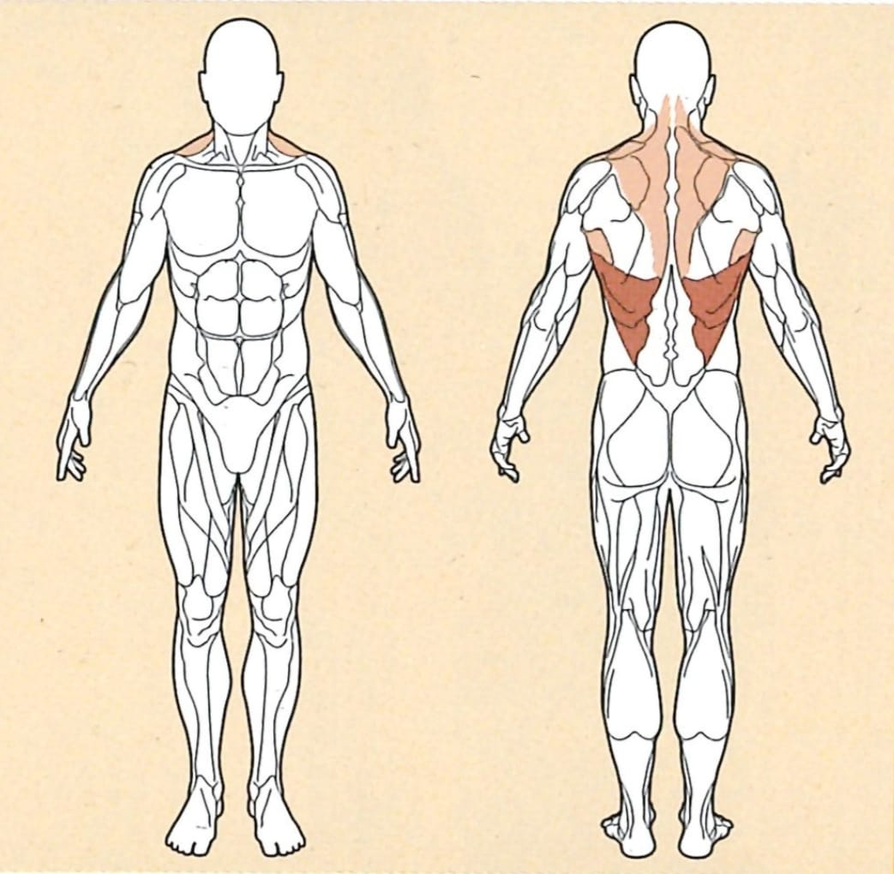

Rudern-Maschine

Ausgangsposition
● Stelle den Sitz so ein, dass die Bruststütze mittig auf deiner Brust anliegt.
● Die Bruststütze ziehst du so weit aus, dass du deine Arme wie auch Schulterblätter ausstrecken musst
um die Griffe zu erreichen.
● Die Grafik zeigt das Rudern am Kabelzug. Orientiere dich an dieser Grafik, da sie die wichtigsten
Punkte der Ruderübung aufzeigt:
○ Ein gerader Rücken
○ Wie weit zurück die Ellenbogen geführt werden sollen
Ausführung
Ziehe nun die Griffe zu deinem Körper heran, und drücke dich dabei gegen die Bruststütze.
Achte darauf, dass du deine Ellenbogen nahe an deinem Körper so weit wie möglich nach hinten ziehst.
Rückführung
Strecke deine Arme nun, kontrolliert, wieder nach vorne um in die Ausgangsposition zurückzukehren.
Wichtig dabei ist, dass du die Arme nicht komplett durchstreckst, um die Spannung im Rücken aufrecht zu
erhalten.